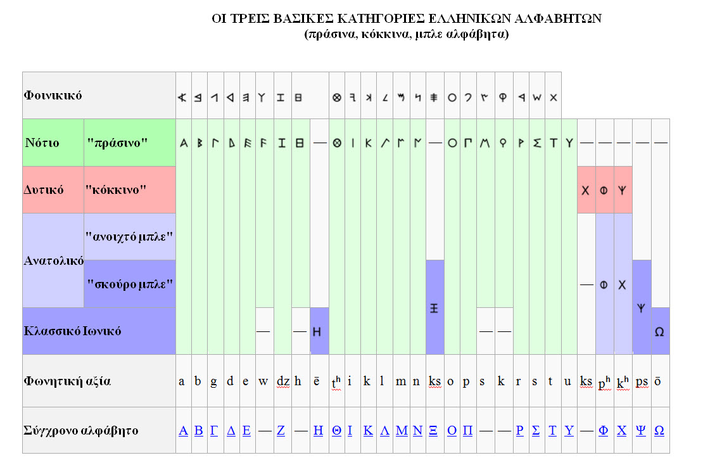

04_output (logo-view) of lagEll0
description::
· output-of-lagEll0 is the-logo-view of lagEll0.
name::
* McsEngl.lagEll0'output!⇒logoEll0,
* McsEngl.logo-view--of-lagEll0!⇒logoEll0,
* McsEngl.logoEll0,
unit of logoEll0
description::
· unitHmnm is any indivisible part of the-logo-view.
name::
* McsEngl.logoEll0'unit!⇒unitEll0,
* McsEngl.unitEll0,
unitEll0.phoneme
description::
· phonemeModern,
· phonemeKoine,
· phonemeClassical,
unitEll0.phonemogram
description::
· Greek has 24 letters:
* Α α, Β β, Γ γ, Δ δ, Ε ε, Ζ ζ, Η η, Θ θ, Ι ι, Κ κ, Λ λ, Μ μ, Ν ν, Ξ ξ, Ο ο, Π π, Ρ ρ, Σ σ/ς, Τ τ, Υ υ, Φ φ, Χ χ, Ψ ψ, and Ω ω.
* Ά Α ά α ἀ ἁ ἂ ἃ ἄ ἅ ἆ ἇ Ἀ Ἁ Ἂ Ἃ Ἄ Ἅ Ἆ Ἇ ὰ ά ᾀ ᾁ ᾂ ᾃ ᾄ ᾅ ᾆ ᾇ ᾈ ᾉ ᾊ ᾋ ᾌ ᾍ ᾎ ᾏ ᾰ ᾱ ᾲ ᾳ ᾴ ᾶ ᾷ Ᾰ Ᾱ Ὰ Ά ᾼ Β β Γ γ Δ δ Έ Ε έ ε ἐ ἑ ἒ ἓ ἔ ἕ Ἐ Ἑ Ἒ Ἓ Ἔ Ἕ ὲ έ Ὲ Έ Ζ ζΉ Η ή η ἠ ἡ ἢ ἣ ἤ ἥ ἦ ἧ Ἠ Ἡ Ἢ Ἣ Ἤ Ἥ Ἦ Ἧ ὴ ή ᾐ ᾑ ᾒ ᾓ ᾔ ᾕ ᾖ ᾗ ᾘ ᾙ ᾚ ᾛ ᾜ ᾝ ᾞ ᾟ ῂ ῃ ῄ ῆ ῇ Ὴ Ή ῌ Θ θ Ί Ι ί ι ἰ ἱ ἲ ἳ ἴ ἵ ἶ ἷ Ἰ Ἱ Ἲ Ἳ Ἴ Ἵ Ἶ Ἷ ὶ ί ῐ ῑ ῒ ΐ ῖ ῗ Ῐ Ῑ Ὶ Ί Κ κ Λ λ Μ μ Ν ν Ξ ξ Ό Ο ο ό ὀ ὁ ὂ ὃ ὄ ὅ Ὀ Ὁ Ὂ Ὃ Ὄ Ὅ ὸ ό Π π Ρ ρ ῤ ῥ Ῥ Σ σ Τ τ Ύ Υ υ ύ ὐ ὑ ὒ ὓ ὔ ὕ ὖ ὗ Ὑ Ὓ Ὕ Ὗ ὺ ύ ῠ ῡ ῢ ΰ ῦ ῧ Ῠ Ῡ Ὺ Ύ Φ φ Χ χ Ψ ψ Ώ Ω ω ώ ὠ ὡ ὢ ὣ ὤ ὥ ὦ ὧ Ὠ Ὡ Ὢ Ὣ Ὤ Ὥ Ὦ Ὧ ὼ ώ ᾠ ᾡ ᾢ ᾣ ᾤ ᾥ ᾦ ᾧ ᾨ ᾩ ᾪ ᾫ ᾬ ᾭ ᾮ ᾯ ῲ ῳ ῴ ῶ ῷ Ὸ Ό Ὼ Ώ ῼ
name::
* McsEngl.Ancient-Greek-letter!⇒letterEll0,
* McsEngl.lagEll0'letter!⇒letterEll0,
* McsEngl.letterEll0,
* McsEngl.phonemogramEll0!⇒letterEll0,
* McsEngl.unitEll0.phonemogram!⇒letterEll0,
====== langoGreek:
* McsElln.γραμΕλλ0!=letterEll0,
* McsElln.γράμμαΕλλα!⇒γραμΕλλ0!=letterEll0,
mapping-to-phoneme of letterEll0
description::
· classical-letter-phoneme-mapping,
keyboard of letterEll0
description::
* lagElln-keyboard:

[{2022-08-21 retrieved} https://upload.wikimedia.org/wikipedia/commons/thumb/c/cf/KB_Greek.svg/640px-KB_Greek.svg.png]
* lagElla-keyboard (polytonic):
name::
* McsEngl.letterEll0'keyboard,
====== langoGreek:
* McsElln.γραμΕλλ0'πληκτρολόγιο,
letterEll0.alphabet
description::

[https://www.greek-language.gr/Resources/files/image/ag_history/diagramma5_2.jpg]
"Many local variants of the Greek alphabet were employed in ancient Greece during the archaic and early classical periods, until around 400 BC, when they were replaced by the classical 24-letter alphabet that is the standard today. All forms of the Greek alphabet were originally based on the shared inventory of the 22 symbols of the Phoenician alphabet, with the exception of the letter Samekh, whose Greek counterpart Xi (Ξ) was used only in a sub-group of Greek alphabets, and with the common addition of Upsilon (Υ) for the vowel /u, ū/.[1][2] The local, so-called epichoric, alphabets differed in many ways: in the use of the consonant symbols Χ, Φ and Ψ; in the use of the innovative long vowel letters (Ω and Η), in the absence or presence of Η in its original consonant function (/h/); in the use or non-use of certain archaic letters (Ϝ = /w/, Ϙ = /k/, Ϻ = /s/); and in many details of the individual shapes of each letter. The system now familiar as the standard 24-letter Greek alphabet was originally the regional variant of the Ionian cities in Anatolia. It was officially adopted in Athens in 403 BC and in most of the rest of the Greek world by the middle of the 4th century BC."
[{2022-04-27 retrieved} https://en.wikipedia.org/wiki/Archaic_Greek_alphabets#Old_Attic]
name::
* McsEngl.GreekAncient-alphabet,
* McsEngl.alphabetEll0,
* McsEngl.alphabetElla,
* McsEngl.letterEll0.alphabet,
* McsEngl.letterElla.alphabet,
letterEll0.capital
description::
· Ά Α Ἀ Ἁ Ἂ Ἃ Ἄ Ἅ Ἆ Ἇ ᾈ ᾉ ᾊ ᾋ ᾌ ᾍ ᾎ ᾏ Ᾰ Ᾱ Ὰ Ά ᾼ Β Γ Δ Έ Ε Ἐ Ἑ Ἒ Ἓ Ἔ Ἕ Ὲ Έ Ζ Ή Η Ἠ Ἡ Ἢ Ἣ Ἤ Ἥ Ἦ Ἧ ᾘ ᾙ ᾚ ᾛ ᾜ ᾝ ᾞ ᾟ Ὴ Ή ῌ Θ Ί Ι Ἰ Ἱ Ἲ Ἳ Ἴ Ἵ Ἶ Ἷ Ῐ Ῑ Ὶ Ί Κ Λ Μ Ν Ξ Ό Ο Ὀ Ὁ Ὂ Ὃ Ὄ Ὅ Π Ρ Ῥ Σ Τ Ύ Υ Ὑ Ὓ Ὕ Ὗ Ῠ Ῡ Ὺ Ύ Φ Χ Ψ Ώ Ω Ὠ Ὡ Ὢ Ὣ Ὤ Ὥ Ὦ Ὧ ᾨ ᾩ ᾪ ᾫ ᾬ ᾭ ᾮ ᾯ Ὸ Ό Ὼ Ώ ῼ
"Πριν κλείσουμε το κεφάλαιο αυτό, θα πρέπει να σημειώσουμε ότι τα αρχαία κείμενα γράφονταν χωρίς διαστήματα ανάμεσα στις λέξεις, με κεφαλαία μόνο και χωρίς τόνους. Τα μικρά γράμματα, ο χωρισμός των λέξεων, οι τόνοι και τα πνεύματα θα έρθουν πολύ αργότερα, από τα χρόνια των κατακτήσεων του Μ. Αλεξάνδρου και μετά. Η εξάπλωση της ελληνικής γλώσσας σε ένα τεράστιο γεωγραφικό εύρος και η εκμάθησή της από αλλόγλωσσους οδηγούν σε «βελτιώσεις» (μικρά γράμματα, χωρισμός των λέξεων, τόνοι/πνεύματα) που βοηθούν στην εκμάθηση της γλώσσας, ιδίως από ξένους. Αλλά οι «βελτιώσεις» αυτές υπηρετούσαν και έναν άλλο στόχο: την επαφή και τη μελέτη παλαιότερων κειμένων της ελληνικής γλώσσας, π.χ. του Ομήρου. Ο χωρισμός των λέξεων, οι τόνοι και τα πνεύματα βοηθούσαν να γίνουν κατανοητά (με τη βοήθεια των φιλολόγων και, στο σχολείο, των δασκάλων) αυτά τα σημαντικά παλαιά κείμενα, που ήταν πια δυσνόητα γιατί η γλώσσα είχε αλλάξει."
[{2022-04-17 retrieved} https://www.greek-language.gr/Resources/ancient_greek/history/ag_history/browse.html?start=65]
name::
* McsEngl.letterEll0.capital,
* McsEngl.letterElla.capital,
====== langoGreekAncient:
* McsElla.γραμΕλλα.κεφαλαίο,
letterEll0.small
description::
* άαἀἁἂἃἄἅἆἇὰάᾀᾁᾂᾃᾄᾅᾆᾇᾰᾱᾲᾳᾴᾶᾷ β γ δ έεἐἑἒἓἔἕὲέ ζ ήηἠἡἢἣἤἥἦἧὴήᾐᾑᾒᾓᾔᾕᾖᾗῂῃῄῆῇ θ ίιἰἱἲἳἴἵἶἷὶίῐῑῒΐῖῗ κ λ μ ν ξ οόὀὁὂὃὄὅὸό π ρῤῥ σ τ υύὐὑὒὓὔὕὖὗὺύῠῡῢΰῦῧ φ χ ψ ωώὠὡὢὣὤὥὦὧὼώᾠᾡᾢᾣᾤᾥᾦᾧῲῳῴῶῷ
"Η ελληνική μικρογράμματη γραφή ή βυζαντινή γραφή είναι μορφή της ελληνικής γραφής, η οποία τυποποιήθηκε στις αρχές του 9ου μ.Χ. Θεωρείται η σημαντικότερη εξελικτική αλλαγή στον τρόπο γραφής και την μορφή των γλύφων του ελληνικού αλφαβήτου [1]. Αναφέρεται και ως στουδιτική γραφή, από το παλαιότερο, μέχρι σήμερα, χρονολογημένο δείγμα ελληνικής μικρογράμματης γραφής, το Τετραβάγγελο Ουσπένσκι, στην Αγία Πετρούπολη. Το χειρόγραφο βιβλίο χρονολογείται από το 835 και προέρχεται από τη μονή Στουδίου.
Όλα σχεδόν τα σωζόμενα ελληνικά βιβλία από τον 4ο αι. π. Χ. ως τις αρχές του 9ου αι. μ.Χ. γράφονται στη μεγαλογράμματη γραφή, η οποία προέρχεται από τη γραφή των αρχαίων επιγραφών. Η μικρογράμματη γραφή φαίνεται να εξελίχθηκε μέσα από την ανάγκη ταχείας επικοινωνίας μέσω χειρογράφων επιστολων, όπου η μορφή των γραμμάτων προσαρμόστηκε στην κίνηση της γραφής. Η αλλαγή τών μορφών των γραμμάτων συστηματοποιήθηκε κατά τη διάρκεια των πρώτων αιώνων του Βυζαντίου και στη συνέχεια υιοθετήθηκε ως γραφή των βιβλίων [2]. Η μικρογράμματη γραφή συνδυάζεται και συνυπάρχει με την μεγαλογράμματη, η οποία παραμένει ως στοιχείο έμφασης στους τίτλους, στα αρχιγράμματα και ενίοτε μέσα στο κείμενο και επηρεάζει ανάλογα τη μικρογράμματη. Η σύγχρονη ελληνική γραφή προέρχεται από την τυπογραφική τυποποίηση της μικρογράμματης του 9ου αι., σε συνδυασμό με τα κεφαλαία της αρχαιότερης μεγαλογράμματης."
[{2022-08-25 retrieved} https://el.wikipedia.org/wiki/Ελληνική_μικρογράμματη_γραφή]
name::
* McsEngl.letterEll0.small,
* McsEngl.letterElln.small,
====== langoGreek:
* McsElln.γραμΕλλν.μικρό,
* McsElln.μικρογράμματατη-γραφή,
letterEll0.diacritic-mark
description::
· marks on letters to show pronunciation.
name::
* McsEngl.letterEll0.diacritic-mark,
specific-tree-of-::
* accent-mark,
* /h/-mark,
letterEll0.accent-mark
description::
"In the classical period (5th–4th century BC) word accents were not indicated in writing, but from the 2nd century BC onwards various diacritic marks were invented, including an acute, circumflex, and grave accent, which indicated a high pitch, a falling pitch, and a low or semi-low pitch respectively. The written accents were used only sporadically at first, and did not come into common use until after 600 AD.
The fragments of ancient Greek music that survive, especially the two hymns inscribed on a stone in Delphi in the 2nd century BC, appear to follow the accents of the words very closely, and can be used to provide evidence for how the accent was pronounced.
Sometime between the 2nd and 4th centuries AD the distinction between acute, grave, and circumflex disappeared and all three accents came to be pronounced as a stress accent, generally heard on the same syllable as the pitch accent in ancient Greek."
[{2022-04-23 retrieved} https://en.wikipedia.org/wiki/Ancient_Greek_accent]
name::
* McsEngl.accentual-mark-of-lagEll0,
* McsEngl.lagEll0'accent-mark,
* McsEngl.lagElla'accent-mark,
* McsEngl.letterEll0'accent-mark,
* McsEngl.letterElla'accent-mark,
====== langoGreek:
* McsElln.γλωσΕλλ0'τονικό-σημάδι,
* McsElln.γλωσΕλλα'τονικό-σημάδι,
* McsElln.τονικό-σημάδι-γλωσΕλλα,
letterEll0.breathing
description::
"9. Every initial vowel or diphthong has either the rough (‘) or the smooth (’) breathing. The rough breathing (spiritus asper) is pronounced as h, which is sounded before the vowel; the smooth breathing (spiritus lenis) is not sounded. Thus, ὅρος hóros boundary, ὄρος óros mountain."
[{2022-05-08 retrieved} http://www.perseus.tufts.edu/hopper/text?doc=Perseus:text:1999.04.0007:part=1:chapter=1:section=3]
name::
* McsEngl.lagEll0'breathing,
* McsEngl.lagElla'breathing,
* McsEngl.letterEll0'breathing,
* McsEngl.letterElla'breathing,
====== langoGreek:
* McsElln.γλωσΕλλα'πνεύμα,
* McsElln.πνεύμα-γλωσΕλλα,
letterEll0.῀-perispomeni-8128
description::
"Για την ώρα μάς ενδιαφέρει ο μουσικός τονισμός των αρχαίων ελληνικών, όπως γίνεται και στα κινέζικα. Ας δούμε ένα παράδειγμα. Στα αρχαία ελληνικά υπάρχουν δύο λέξεις που αποτελούνται από τους ίδιους φθόγγους αλλά έχουν διαφορετική σημασία, ανάλογα με τη «νότα», το ύψος της προφοράς. Η λέξη φως = [foos] (θυμηθείτε ότι το ω ισοδυναμεί, ως προς τη διάρκειά του, με δύο ο), αν προφερθεί με τη φωνή να ανεβαίνει στο πρώτο ο και να κατεβαίνει στο δεύτερο, δηλαδή [fóòs], σημαίνει, όπως και σήμερα, το 'φως'. Στην παλιότερη ορθογραφία αυτό το ανεβοκατέβασμα της φωνής δηλωνόταν με ένα σημάδι (μια καμπύλη) που λεγόταν περισπωμένη: φῶς , Αν πάλι προφερθεί χωρίς αυτή τη μελωδική καμπύλη αλλά με τη φωνή να ανεβαίνει στο δεύτερο ο, δηλαδή [foós] = φώς, τότε στα αρχαία ελληνικά σημαίνει 'άνθρωπος'. Βλέπετε λοιπόν πώς η διαφορά στη μελωδία, στο ύψος της προφοράς, ξεχωρίζει λέξεις και σημασίες στα αρχαία ελληνικά. Στα νέα ελληνικά αυτός ο διαχωρισμός γίνεται με βάση την ένταση της προφοράς και όχι το ύψος (τη μελωδία). Γι' αυτό λέμε ότι τα αρχαία ελληνικά είχαν μουσικό τονισμό της λέξης, ενώ τα νεότερα ελληνικά έχουν δυναμικό τονισμό της λέξης. Στα νέα ελληνικά το ύψος διαχωρίζει σημασίες ολόκληρων φράσεων και προτάσεων (και αυτό είναι ο επιτονισμός, όπως είδαμε πιο πάνω) αλλά όχι λέξεων."
[{2022-04-14 retrieved} https://www.greek-language.gr/Resources/ancient_greek/history/ag_history/browse.html?start=17]
"῀ = η προσωδία του φωνήεντος είναι περισπωμένη, δηλαδή 'σπασμένη', και η φωνή στην αρχή ανεβαίνει και στη συνέχεια κατεβαίνει· γι' αυτό και αρχικά το σχήμα αυτού του σημαδιού ήταν ^. Επειδή χρειάζεται χρόνος για ένα τέτοιο ανεβοκατέβασμα της φωνής, περισπωμένη μπορεί να έχουν μόνο τα μακρά φωνήεντα και οι δίφθογγοι, όπου ο τόνος ανεβαίνει στο πρώτο μισό τους και κατεβαίνει στο δεύτερο: ῶ = , ῆ = , αῖ = ."
[{2022-04-19 retrieved} https://www.greek-language.gr/Resources/ancient_greek/history/ag_history/browse.html?start=185]
name::
* McsEngl.circumflex-of-lagEll0-῀-8128,
* McsEngl.letterEll0.perispomeni-῀-8128,
* McsEngl.letterEll0.῀-perispomeni-8128,
* McsEngl.letterElla.perispomeni-῀-8128,
* McsEngl.letterElla.῀-perispomeni-8128,
* McsEngl.perispomeni-῀-8128,
====== langoGreek:
* McsElln.περισπωμένη/perispoméni/-Αρχαίας-Ελληνικής!η!=perispomeni-῀-8128, (members)
letterEll0.´-oxia-8189
description::
"΄ = η προσωδία του φωνήεντος είναι οξεία, δηλαδή η φωνή ανεβαίνει, γίνεται οξύτερη: έ = · αν το φωνήεν είναι μακρό, ο τόνος ανεβαίνει στο δεύτερο μισό του: ή = , ώ = , μακρό ά = ."
[{2022-04-19 retrieved} https://www.greek-language.gr/Resources/ancient_greek/history/ag_history/browse.html?start=185]
name::
* McsEngl.accute-mark-of-lagEll0-´-8189,
* McsEngl.letterEll0.oxia-´-8189,
* McsEngl.letterEll0.´-oxia-8189,
* McsEngl.letterElla.oxia-´-8189,
* McsEngl.letterElla.´-oxia-8189,
* McsEngl.oxia-´-8189,
====== langoGreek:
* McsElln.οξεία/oksía/-Αρχαίας-Ελληνικής!η!=oxia-´-8189, (members)
letterEll0.`-varia-8175
description::
"̀ = η προσωδία του φωνήεντος είναι βαρεία, δηλαδή η φωνή βρίσκεται χαμηλά: μάθὴμὰ = . Η βαρεία γράφεται μόνο όταν αντικαθιστά την οξεία της λήγουσας για να δείξει ότι δεν ακολουθεί κάποιο σημείο στίξης: πολλὴ τιμή· = ."
[{2022-04-19 retrieved} https://www.greek-language.gr/Resources/ancient_greek/history/ag_history/browse.html?start=185]
name::
* McsEngl.lagEll0'grave-`-8175,
* McsEngl.lagEll0'varia-`-8175,
* McsEngl.lagElla'grave-`-8175,
* McsEngl.lagElla'varia-`-8175,
* McsEngl.letterEll0.varia-`-8175,
* McsEngl.letterEll0.`-varia-8175,
* McsEngl.letterElla.varia-`-8175,
* McsEngl.letterElla.`-varia-8175,
* McsEngl.varia-of-lagEll0,
====== langoGreek:
* McsElln.βαρεία/varía/-Αρχαίας-Ελληνικής-η,
letterEll0.῾-dasia-8190
description::
"Όπως λέγαμε στο Τμήμα 6 του πρώτου κεφαλαίου, οι γλώσσες αλλάζουν μέσα στον χρόνο. Κάποιοι φθόγγοι χάνονται και δημιουργούνται νέοι. Στα αρχαία ελληνικά υπήρχαν, όπως είδαμε λίγο πιο πριν, μακρά φωνήεντα. Αυτά χάθηκαν και έτσι στα νέα ελληνικά δεν έχουμε μακρά φωνήεντα. Στα αρχαία ελληνικά υπήρχε επίσης ένα σύμφωνο που έμοιαζε με το αγγλικό σύμφωνο [h], όπως στις λέξεις have'έχω', house'σπίτι', ή με αυτό που γράφουμε ως χ στο επιφώνημα ούχουου. Το σύμφωνο αυτό χάθηκε από τη γλώσσα αρκετά νωρίς, γύρω στον 2ο αιώνα μ.Χ. Εξακολούθησε όμως να συμβολίζεται στη γραφή με ένα σημάδι που λεγόταν δασεία. Έτσι, η λέξη απλός, που στα αρχαία ελληνικά προφερόταν [haplόs], γραφόταν μέχρι πολύ πρόσφατα, μέχρι την κατάργηση των πνευμάτων , ως ἁπλός. Το σημάδι ῾ δηλώνει το σύμφωνο [h] με το οποίο άρχιζε κάποτε αυτή η λέξη."
[{2022-04-15 retrieved} https://www.greek-language.gr/Resources/ancient_greek/history/ag_history/browse.html?start=19]
"῾ = η προσωδία του φωνήεντος είναι δασεία, δηλαδή 'τραχιά', επειδή υπάρχει ο φθόγγος πριν από το φωνήεν: ὁ = , Ἑλλάς = λατινικά Hellas. Το αρχικό σχήμα του σημαδιού ήταν , δηλαδή μισό Η. Αργότερα απλοποιήθηκε σε ˻, και ακόμη αργότερα σε ῾."
[{2022-04-19 retrieved} https://www.greek-language.gr/Resources/ancient_greek/history/ag_history/browse.html?start=185]
name::
* McsEngl.dasia-῾-8190-of-lagEll0,
* McsEngl.letterEll0.dasia-῾-8190,
* McsEngl.letterElla.dasia-῾-8190,
* McsEngl.letterEll0.῾-dasia-8190,
* McsEngl.letterElla.῾-dasia-8190,
====== langoGreek:
* McsElln.γραμΕλλ0.δασεία,
* McsElln.γραμΕλλα.δασεία,
* McsElln.δασεία-γραμΕλλ0,
letterEll0.᾿-psili-8127
description::
"᾿ = η προσωδία του φωνήεντος είναι ψιλή, δηλαδή 'γυμνή', χωρίς τον φθόγγο : ὀ = (το αρσενικό άρθρο στη Σαπφώ), ἀλλά = (προσέξτε ότι προφέρονται δύο λάμδα). Τα σχήματα του σημαδιού ήταν όπως αυτά της δασείας αλλά σε αντίστροφη φορά."
[{2022-04-19 retrieved} https://www.greek-language.gr/Resources/ancient_greek/history/ag_history/browse.html?start=185]
name::
* McsEngl.letterEll0.psili-᾿-8127,
* McsEngl.letterEll0.᾿-psili-8127,
* McsEngl.letterElla.psili-᾿-8127,
* McsEngl.letterElla.᾿-psili-8127,
* McsEngl.psili-᾿-8127-of-lagEll0,
====== langoGreek:
* McsElln.ψιλή-᾿-8127-of-lagEll0,
letterEll0.ͺ-ypogegrammeni-890
description::
"Ας αρχίσουμε με τα ουσιαστικά, τα επίθετα, τα άρθρα, τις αντωνυμίες. Όλα αυτά κλίνονται, όπως στα νέα ελληνικά, με τη διαφορά ότι στα αρχαία ελληνικά υπάρχει μια πτώση που έχει χαθεί στα νέα ελληνικά , η δοτική. Έτσι, στο νέο ελληνικό (έδωσα) στον πατέρα (που αποτελείται από την πρόθεση σε και το άρθρο τον + ουσιαστικό) αντιστοιχεί το αρχαίο τῶι πατρί (το τῶι γράφεται και τῷ, με το ι από κάτω - αυτή είναι η «υπογεγραμμένη», δηλαδή το γράμμα που γράφεται ὑπό 'από κάτω'). "
[{2022-04-18 retrieved} https://www.greek-language.gr/Resources/ancient_greek/history/ag_history/browse.html?start=95]
name::
* McsEngl.letterEll0.ypogegrammeni-ͺ-890,
* McsEngl.letterEll0.ͺ-ypogegrammeni-890,
* McsEngl.letterElla.ypogegrammeni-ͺ-890,
* McsEngl.letterElla.ͺ-ypogegrammeni-890,
* McsEngl.ypogegrammeni-ͺ-890-of-lagEll0,
====== langoGreek:
* McsElln.υπογεγραμμένη-ͺ-890-of-lagEll0,
letterEll0.Ϝϝ-digamma-988-989
description::
"Στα αρχαία ελληνικά υπήρχε ακόμη ένα σύμφωνο που ονομαζόταν δίγαμμα, γιατί το γράμμα με το οποίο δηλωνόταν είχε τη μορφή Ƒ (έμοιαζε με διπλό κεφαλαίο γάμα). Με το σύμφωνο αυτό άρχιζε π.χ. η λέξη εργάζομαι: Ƒ εργάζομαι και η προφορά του Ƒ πλησίαζε την προφορά του w της αγγλικής (π.χ. was 'ήταν') ή στην προφορά του όχι σε ορισμένες διαλέκτους της νέας ελληνικής: ουόχι. Και αυτό το σύμφωνο χάθηκε και δεν υπάρχει πια στα ελληνικά που μιλάμε σήμερα. Έτσι, λοιπόν, η σημερινή λέξη εργάζομαι προφερόταν στα πολύ παλιά αρχαία ελληνικά ουεργάζομαι. Διαφορετικά, όμως, από τα νέα ελληνικά προφερόταν, όπως θα δούμε αργότερα, και το γ, το ζ και το αι."
[{2022-04-15 retrieved} https://www.greek-language.gr/Resources/ancient_greek/history/ag_history/browse.html?start=19]
===
"Digamma or wau (uppercase: Ϝ, lowercase: ϝ, numeral: ϛ) is an archaic letter of the Greek alphabet. It originally stood for the sound /w/ but it has remained in use principally as a Greek numeral for 6."
[{2022-04-26 retrieved} https://en.wikipedia.org/wiki/Digamma]
name::
* McsEngl.letterEll0.digamma/daigáma/,
* McsEngl.letterEll0.Ϝ-988,
* McsEngl.letterEll0.ϝ-989,
* McsEngl.letterElla.digamma/daigáma/,
* McsEngl.letterElla.Ϝ-988,
* McsEngl.letterElla.ϝ-989,
====== langoGreek:
* McsElln.γραμΕλλ0.δίγαμμα-Ϝ-ϝ-988-988,
* McsElln.γραμΕλλ0.Ϝ-ϝ-/dhíyama/-988-988,
* McsElln.γραμΕλλα.δίγαμμα-το,
* McsElln.δίγαμμα-το/dhíyama-to/,
letterEll0.Α-α-alpha-914-946
description::
"Ήρθε τώρα η ώρα να δούμε τα στοιχεία που πείθουν ότι το ελληνικό αλφάβητο γεννήθηκε από το φοινικικό. Το πρώτο στοιχείο είναι η ομοιότητα των γραμμάτων και η παρόμοια σειρά. Το δεύτερο είναι τα ονόματά τους: άλφα, βήτα, γάμα, δέλτα κλπ. Η λέξη άλφα είναι προσαρμογή του φοινικικού ονόματος 'aleph, για το ίδιο γράμμα, και σημαίνει 'βόδι'. Το γράμμα Α δηλαδή προέρχεται από ένα εικονογραφικό σημάδι που απεικόνιζε το βόδι. Αυτό φαίνεται καθαρά αν δούμε το πρωτοσιναϊτικό σημάδι, όπου φαίνεται το κεφάλι του βοδιού με τα κέρατά του (βλ. εικ. 33). Αυτό το εικονιστικό σχήμα απλοποιήθηκε για να δώσει το Α. Αρχικά λοιπόν'alephσήμαινε το βόδι και την εικόνα του, το εικονόγραμμά του. Στη συνέχεια, όταν το σύστημα γραφής μετατρέπεται από εικονογραφικό/σημασιογραφικό σε αλφαβητικό, το σημάδι δεν απεικονίζει πλέον το αντικείμενο (το βόδι) αλλά τον πρώτο φθόγγο, με τον οποίο αρχίζει η λέξη που το ονομάζει: 'aleph. Αυτή η διαδικασία ονομάζεται ακροφωνική: η «αξία» ενός γράμματος ταυτίζεται με το πρώτο σύμφωνο της λέξης που απεικονίζει το σημείο. Το φοινικικό γράμμα'aleph (από το οποίο προέρχεται το ελληνικό άλφα) απέδιδε ένα σύμφωνο που σχηματιζόταν βαθιά στη στοματική κοιλότητα - ήταν λαρυγγικό, αυτό σημαίνει το σημάδι ' πριν από το α. Για τους Έλληνες ακουγόταν ως το πιο κοντινό στο δικό τους φωνήεν [a], και έτσι το χρησιμοποίησαν για να δηλώσουν αυτό το φωνήεν και το ονόμασαν, προσαρμόζοντας τη φοινικική λέξη, άλφα. Το έκαναν άλφα γιατί το Φ στα αρχαία ελληνικά προφερόταν [ph], όπως θα δούμε παρακάτω. Δεν το άφησαν αλφ γιατί καμιά ελληνική λέξη δεν τελειώνει σε φ."
[{2022-04-17 retrieved} https://www.greek-language.gr/Resources/ancient_greek/history/ag_history/browse.html?start=61]
name::
* McsEngl.letterEll0.alpha/álfa/-Α-α-914-946,
* McsEngl.letterEll0.Α-α-alpha-914-946,
* McsEngl.letterElla.alpha/álfa/-Α-α-914-946,
* McsEngl.letterElla.Α-α-alpha-914-946,
====== langoGreek:
* McsElln.γραμΕλλ0.Α-/álfa/-914-946,
* McsElln.γραμΕλλ0.άλφα/álfa/-Α-914-946,
* McsElln.γραμΕλλα.άλφα/álfa/-Α,
====== langoGreekAncient:
* McsElla.γραμΕλλα.άλφα/álpʰa/-Α,
letterEll0.Β-β-beta-914-946
description::
· Β|β = /v/ modern,
· Β|β = /b/ classical,
· βάρβαρος => barbarus
"Δύο ακόμη παραδείγματα που δείχνουν την αλλαγή των φθόγγων μέσα στον χρόνο. Στα αρχαία ελληνικά κείμενα, όταν γίνεται λόγος για το βέλασμα των προβάτων, αυτό περιγράφεται ως βῆ βῆ (θυμηθείτε τί είπαμε για το σημάδι πάνω από το η, που ονομάζεται περισπωμένη). Όλοι ξέρουμε ότι ο ήχος που κάνουν τα πρόβατα όταν βελάζουν είναι μπέε μπέε. Τί συμβαίνει λοιπόν; Είτε τα πρόβατα στην αρχαιότητα βέλαζαν [vi vi], δηλαδή διαφορετικά απ' ό,τι σήμερα, είτε απλά μέσα στον χρόνο άλλαξε η προφορά του β και του η. Αυτό βέβαια είναι και το πιθανότερο.
Για την προφορά του η στα αρχαία ελληνικά έχουμε ήδη μιλήσει. Είχαμε πει ότι εκείνη την εποχή προφερόταν ως ένα μακρό [e] (= [ee]) και όχι με τον ίδιο τρόπο όπως το σημερινό ι. Πώς το ξέρουμε; Το παράδειγμα του βῆ βῆ μιλάει μόνο του. Αν δεν κάνουμε την τρελή υπόθεση ότι τα πρόβατα βέλαζαν διαφορετικά στα αρχαία χρόνια, θα πρέπει να δεχθούμε ότι το η προφερόταν εκείνη την εποχή ως ένα μακρό [e] = [ee] και όχι όπως προφέρεται σήμερα. Γι' αυτό άλλωστε υπήρχε ένα ξεχωριστό γράμμα, το η, που το ξεχώριζε από το ι.
Αλλά η ιστορία δεν τελειώνει εδώ. Αν τα πρόβατα κάνουν μπέε, αυτό σημαίνει ότι και το β του βῆ βῆ δεν προφερόταν όπως σήμερα, με τη συνάντηση χειλιών και δοντιών (χειλοδοντικό), αλλά με τη συνάντηση των χειλιών: μπ, ή [b] αν το γράψουμε με το λατινικό γράμμα. Ήταν ηχηρό διχειλικό. Οι φθόγγοι λοιπόν που γράφονται σήμερα με τα γράμματα β και η προφέρονταν διαφορετικά στην αρχαιότητα. Η προφορά άλλαξε, αλλά δεν άλλαξε η γραφή. Γι' αυτό ονομάζουμε την ορθογραφία της νέας ελληνικής ιστορική. Επειδή τα νέα ελληνικά γράφονται με τον τρόπο που γράφονταν τα αρχαία ελληνικά."
[{2022-04-16 retrieved} https://www.greek-language.gr/Resources/ancient_greek/history/ag_history/browse.html?start=20]
"Το δεύτερο γράμμα του φοινικικού αλφαβήτου ονομαζόταν bet. Η λέξη αυτή σημαίνει 'σπίτι' ή 'σκηνή' και το σημείο αρχικά απεικόνιζε ένα σπίτι. Μετά, με βάση την ακροφωνική αρχή που αναφέραμε, κατέληξε να δηλώνει τον φθόγγο [b]. Οι Έλληνες χρησιμοποίησαν το γράμμα αυτό για το δικό τους σύμφωνο [b], δηλαδή το Β (θυμηθείτε τί λέγαμε για την προφορά του β στα αρχαία ελληνικά) και υιοθέτησαν, προσαρμοσμένο στα ελληνικά, το φοινικικό όνομα του συμφώνου: βήτα (προφερόταν [beeta]). Το έκαναν βήτα και δεν το άφησαν βητ γιατί καμιά ελληνική λέξη δεν τελειώνει σε τ."
[{2022-04-17 retrieved} https://www.greek-language.gr/Resources/ancient_greek/history/ag_history/browse.html?start=61]
name::
* McsEngl.beta/béita/-Β-β-914-946-letterEll0,
* McsEngl.letterEll0.beta-Β-β-914-946,
* McsEngl.letterEll0.Β-β-beta-914-946,
* McsEngl.letterElla.beta-Β-β-914-946,
* McsEngl.letterElla.Β-β-beta-914-946,
====== langoGreek:
* McsElln.γραμΕλλ0.Β-/víta/-914-946,
* McsElln.γραμΕλλ0.βήτα/víta/-Β-914-946,
* McsElln.γραμΕλλα.βήτα/víta/-Β,
====== langoGreekAncient:
* McsElla.γραμΕλλα./b/-Β,
* McsElla.γραμΕλλα.βήτα/beéta/-Β,
letterEll0.Γ-γ-gamma-915-947
description::
· Γ|γ = /y/ modern,
· Γ|γ = /g/ classical,
· γραμματική => grammatica
"Το τρίτο σύμφωνο του φοινικικού αλφαβήτου ονομαζόταν gaml και πιστεύεται ότι αρχικά ήταν ένα εικονόγραμμα που απεικόνιζε την καμήλα (η λέξη καμήλα που χρησιμοποιούμε στα ελληνικά προέρχεται από τη λέξη gaml), τονίζοντας την καμπούρα της. Όπως και στις προηγούμενες περιπτώσεις, η λέξη αυτή κατέληξε να δηλώνει το σύμφωνο [g], δηλαδή το Γ. Οι Έλληνες χρησιμοποίησαν το γράμμα για να δηλώσουν το δικό τους σύμφωνο [g] (το γ προφερόταν [g] στα αρχαία ελληνικά) και το ονόμασαν, προσαρμόζοντας τη φοινικική λέξη, γάμα."
[{2022-04-17 retrieved} https://www.greek-language.gr/Resources/ancient_greek/history/ag_history/browse.html?start=61]
name::
* McsEngl.gamma/gáma/-Γ-γ-915-947-letterEll0,
* McsEngl.letterEll0.gamma-Γ-γ-915-947,
* McsEngl.letterEll0.Γ-γ-gamma-915-947,
* McsEngl.letterElla.gamma-Γ-γ-915-947,
* McsEngl.letterElla.Γ-γ-gamma-915-947,
====== langoGreek:
* McsElln.γραμΕλλ0.Γ-/yáma/-915-947,
* McsElln.γραμΕλλ0.γάμα/yáma/-Γ-915-947,
* McsElln.γραμΕλλα.γάμα/yáma/-Γ,
====== langoGreekAncient:
* McsElla.γραμΕλλα./g/-Γ,
* McsElla.γραμΕλλα.γάμα/gáma/-Γ,
letterEll0.Δ-δ-delta-916-948
description::
· Δ|δ = /dh/ modern,
· Δ|δ = /d/ classical,
· δράκος => draco
"Το τέταρτο γράμμα του φοινικικού αλφαβήτου ονομαζόταν delt. Η λέξη αυτή σήμαινε μάλλον 'φύλλο πόρτας' και αρχικά το σημείο αυτό ήταν εικονόγραμμα που απεικονίζει πόρτα, για να καταλήξει αργότερα να δηλώνει τον φθόγγο [d]. Οι Έλληνες χρησιμοποίησαν το γράμμα αυτό για να δηλώσουν το δικό τους σύμφωνο [d], δηλαδή το Δ (που προφερόταν [d] στα αρχαία ελληνικά) και εξελλήνισαν το φοινικικό delt σε δέλτα."
[{2022-04-17 retrieved} https://www.greek-language.gr/Resources/ancient_greek/history/ag_history/browse.html?start=61]
name::
* McsEngl.delta/délta/-Δ-δ-916-948-letterEll0,
* McsEngl.letterEll0.delta-Δ-δ-916-948,
* McsEngl.letterEll0.Δ-δ-delta-916-948,
* McsEngl.letterElla.delta-Δ-δ-916-948,
* McsEngl.letterElla.Δ-δ-delta-916-948,
====== langoGreek:
* McsElln.γραμΕλλ0.Δ-/dhélta/-916-948,
* McsElln.γραμΕλλ0.δέλτα/dhélta/-Δ-916-948,
* McsElln.γραμΕλλα.δέλτα/dhélta/-Δ,
====== langoGreekAncient:
* McsElla.γραμΕλλα./d/-Δ,
* McsElla.γραμΕλλα.δέλτα/délta/-Δ,
letterEll0.Ε-ε-epsilon-917-949
description::
"Το πέμπτο γράμμα του φοινικικού αλφαβήτου ονομαζόταν he και ήταν ένα σύμφωνο που έμοιαζε με το h της αγγλικής λέξης house 'σπίτι' ή have 'έχω'. Δεν ξέρουμε τί ακριβώς σήμαινε η λέξη he. Οι Έλληνες χρησιμοποίησαν το γράμμα αυτό για να δηλώσουν το δικό τους φωνήεν [e], το Ε, αυτό που αργότερα, στα βυζαντινά χρόνια, θα ονομαστεί έψιλον και θα φτάσει με το όνομα αυτό μέχρι σήμερα."
[{2022-04-17 retrieved} https://www.greek-language.gr/Resources/ancient_greek/history/ag_history/browse.html?start=61]
name::
* McsEngl.letterEll0.epsilon-Ε-ε-917-949,
* McsEngl.letterEll0.Ε-ε-epsilon-917-949,
* McsEngl.letterElla.epsilon-Ε-ε-917-949,
* McsEngl.letterElla.Ε-ε-epsilon-917-949,
====== langoGreek:
* McsElln.γραμΕλλ0.Ε-/épsilon/-917-949,
* McsElln.γραμΕλλ0.έψιλον/épsilon/-Ε-917-949,
* McsElln.γραμΕλλα.έψιλον/épsilon/-Ε,
letterEll0.Ζ-ζ-zeta-918-950
description::
· Ζ|ζ = /z/ modern,
· Ζ|ζ = /zd/ classical,
"Το επόμενο γράμμα ονομαζόταν zai αλλά δεν ξέρουμε τί σήμαινε η λέξη αυτή. Το γράμμα αυτό το χρησιμοποίησαν οι Έλληνες για να αποδώσουν ένα δικό τους συγγενικό σύμφωνο, αυτό που ονομάζεται ζήτα, Ζ. Αλλά, όπως θα δούμε στο επόμενο κεφάλαιο, στα αρχαία ελληνικά το γράμμα Ζ απέδιδε ένα σύμπλεγμα συμφώνων [zd]."
[{2022-04-17 retrieved} https://www.greek-language.gr/Resources/ancient_greek/history/ag_history/browse.html?start=61]
"Η προφορά του ζ στα αρχαία ελληνικά δεν ήταν ίδια με την προφορά του στα νέα ελληνικά. Το γράμμα ζ «κρύβει» δύο φθόγγους - είναι [zd]. Πώς το ξέρουμε αυτό; Το ξέρουμε από τις περιγραφές των ίδιων των αρχαίων, αλλά και από τη μορφή με την οποία αποδίδονται ξένες λέξεις (με τους φθόγγους [zd]) στα αρχαία ελληνικά. Έτσι τα περσικά ονόματα Auramazda, Artavazda αποδίδονται στα αρχαία ελληνικά ως Ώρομάζης, Αρτάοζος. Η αλλαγή του [zd] σε [ζ], όπως στα νέα ελληνικά, φαίνεται ότι άρχισε νωρίς, ήδη από τον 4ο αιώνα π.Χ."
[{2022-04-17 retrieved} https://www.greek-language.gr/Resources/ancient_greek/history/ag_history/browse.html?start=74]
name::
* McsEngl.letterEll0.zeta/zíta|zéita/-Ζ-ζ-918-950,
* McsEngl.letterEll0.Ζ-ζ-zeta-918-950,
* McsEngl.letterElla.zeta/zíta|zéita/-Ζ-ζ-918-950,
* McsEngl.letterElla.Ζ-ζ-zeta-918-950,
====== langoGreek:
* McsElln.γραμΕλλ0.Ζ-/zíta/-918-950,
* McsElln.γραμΕλλ0.ζήτα/zíta/-Ζ-918-950,
* McsElln.γραμΕλλα.ζήτα/zíta/-Ζ,
letterEll0.Η-η-eta-919-951
description::
· Η-η = /i/ modern
· Η-η = /i/ {i100.0200 | i100.0300}
· Η-η = /ee/ classical
"Δύο ακόμη παραδείγματα που δείχνουν την αλλαγή των φθόγγων μέσα στον χρόνο. Στα αρχαία ελληνικά κείμενα, όταν γίνεται λόγος για το βέλασμα των προβάτων, αυτό περιγράφεται ως βῆ βῆ (θυμηθείτε τί είπαμε για το σημάδι πάνω από το η, που ονομάζεται περισπωμένη). Όλοι ξέρουμε ότι ο ήχος που κάνουν τα πρόβατα όταν βελάζουν είναι μπέε μπέε. Τί συμβαίνει λοιπόν; Είτε τα πρόβατα στην αρχαιότητα βέλαζαν [vi vi], δηλαδή διαφορετικά απ' ό,τι σήμερα, είτε απλά μέσα στον χρόνο άλλαξε η προφορά του β και του η. Αυτό βέβαια είναι και το πιθανότερο.
Για την προφορά του η στα αρχαία ελληνικά έχουμε ήδη μιλήσει. Είχαμε πει ότι εκείνη την εποχή προφερόταν ως ένα μακρό [e] (= [ee]) και όχι με τον ίδιο τρόπο όπως το σημερινό ι. Πώς το ξέρουμε; Το παράδειγμα του βῆ βῆ μιλάει μόνο του. Αν δεν κάνουμε την τρελή υπόθεση ότι τα πρόβατα βέλαζαν διαφορετικά στα αρχαία χρόνια, θα πρέπει να δεχθούμε ότι το η προφερόταν εκείνη την εποχή ως ένα μακρό [e] = [ee] και όχι όπως προφέρεται σήμερα. Γι' αυτό άλλωστε υπήρχε ένα ξεχωριστό γράμμα, το η, που το ξεχώριζε από το ι."
[{2022-04-16 retrieved} https://www.greek-language.gr/Resources/ancient_greek/history/ag_history/browse.html?start=20]
"Το επόμενο γράμμα του φοινικικού αλφαβήτου ονομαζόταν het. Η λέξη αυτή σήμαινε μάλλον 'τοίχος, περίφραξη'. Στη συνέχεια, όταν έπαψε το σημείο να είναι εικονογραφικό, δήλωνε τον πρώτο φθόγγο, το πρώτο σύμφωνο, της λέξης het. Το σύμφωνο αυτό σχηματιζόταν στον φάρυγγα, βαθιά στον λαιμό. Οι Έλληνες το άκουγαν κοντά σε ένα δικό τους σύμφωνο που χάθηκε νωρίς στην ιστορία της ελληνικής γλώσσας (το συζητήσαμε στο δεύτερο κεφάλαιο) και χρησιμοποίησαν το φοινικικό γράμμα για να αποδώσουν αυτό το σύμφωνο, που ήταν, και αυτό, κοντά στο hτων αγγλικών λέξεων have 'έχω', house 'σπίτι'. Στη διάλεκτο της Αθήνας (την αττική διάλεκτο) αλλά και στις διαλέκτους της Ιωνίας, που είχαν χάσει νωρίτερα από άλλες το σύμφωνο αυτό, το γράμμα χρησιμοποιήθηκε για να δηλώσει το μακρό [e] = [ee]. Έτσι γεννήθηκε το Η, ήτα (η απόδοση στα ελληνικά της φοινικικής λέξης het), που χρησιμοποιείται ως σήμερα, χωρίς ωστόσο να αντιστοιχεί πια σε ένα μακρό [e]. Τα μακρά φωνήεντα χάθηκαν στην πορεία της εξέλιξης της ελληνικής και το μακρό [e] συνέπεσε με το [ί]. Κρατήθηκε η παλιά ορθογραφία αλλά η προφορά έχει αλλάξει: το η προφέρεται όπως και το ι."
[{2022-04-17 retrieved} https://www.greek-language.gr/Resources/ancient_greek/history/ag_history/browse.html?start=61]
name::
* McsEngl.eta/íta|éita/-Η-η-919-951-letterEll0,
* McsEngl.letterEll0.eta-Η-η-919-951,
* McsEngl.letterEll0.Η-η-eta-919-951,
* McsEngl.letterElla.eta-Η-η-919-951,
* McsEngl.letterElla.Η-η-eta-919-951,
====== langoGreek:
* McsElln.γραμΕλλ0.Η-/íta/-919-951,
* McsElln.γραμΕλλ0.ήτα/íta/-Η-919-951,
* McsElln.γραμΕλλα.ήτα/íta/-Η,
====== langoGreekAncient:
* McsElla./ee/-Η,
* McsElla.Η-/ee/,
* McsElla.γραμΕλλα./ee/-Η,
* McsElla.γραμΕλλα.Η-/ee/,
* McsElla.γραμΕλλα.ήτα/eéta/-Η,
letterEll0.Θ-θ-theta-920-952
description::
· Θ-θ = /th/ modern,
· Θ-θ = /tʰ/ classical,
· ΘΕΩΡΙΑ => theoria
"Στα αρχαία ελληνικά υπήρχε ένας φθόγγος [th], που έχει χαθεί στα νέα ελληνικά. Οι Έλληνες χρησιμοποίησαν το σημάδι που ονομαζόταν tet στα φοινικικά (δεν ξέρουμε τί σήμαινε η λέξη αυτή) και απέδιδε έναν παρόμοιο φθόγγο. Οι Έλληνες προσάρμοσαν το όνομα του φθόγγου αυτού στα ελληνικά και έτσι προέκυψε το όνομα του γράμματος Θ, θήτα. Να επαναλάβουμε όμως ότι αυτό το γράμμα προφερόταν [th] στα αρχαία ελληνικά."
[{2022-04-17 retrieved} https://www.greek-language.gr/Resources/ancient_greek/history/ag_history/browse.html?start=61]
name::
* McsEngl.letterEll0.theta-Θ-θ-920-952,
* McsEngl.letterEll0.Θ-θ-theta-920-952,
* McsEngl.letterElla.theta-Θ-θ-920-952,
* McsEngl.letterElla.Θ-θ-theta-920-952,
====== langoGreek:
* McsElln.γραμΕλλ0.Θ-/θíta/-920-952,
* McsElln.γραμΕλλ0.θήτα/θíta/-Θ-920-952,
* McsElln.γραμΕλλα.θήτα/θíta/-Θ,
====== langoGreekAncient:
* McsElla./tʰ/-Θ,
* McsElla.Θ-/tʰ/,
* McsElla.γραμΕλλα./tʰ/-Θ,
* McsElla.γραμΕλλα.Θ-/tʰ/,
* McsElln.γραμΕλλα.θήτα/tʰeéta/-Θ,
letterEll0.Ι-ι-iota-921-953
description::
"Το επόμενο γράμμα του φοινικικού αλφαβήτου ονομαζόταν yod. Η λέξη αυτή σήμαινε 'χέρι' και φαίνεται ότι το σημείο αυτό ήταν αρχικά το εικονόγραμμα του χεριού. Στο φοινικικό αλφάβητο αποδίδει ένα σύμφωνο, όπως αυτό που ακούγεται στην αρχή της αγγλικής λέξης you 'εσύ' ή στη λέξη παιδιά [peδyá]. Στα αρχαία ελληνικά δεν υπήρχε τέτοιο σύμφωνο και οι Έλληνες αποφάσισαν να χρησιμοποιήσουν αυτό το φοινικικό γράμμα για να αποδώσουν ένα κοντινό του φωνήεν, το I. Έτσι το σύμφωνο yod της φοινικικής έγινε το φωνήεν ιώτα (δηλαδή γιώτα) της ελληνικής."
[{2022-04-17 retrieved} https://www.greek-language.gr/Resources/ancient_greek/history/ag_history/browse.html?start=61]
name::
* McsEngl.letterEll0.iota/aióta/-Ι-ι-921-953,
* McsEngl.letterEll0.Ι-ι-iota-921-953,
* McsEngl.letterElla.iota/aióta/-Ι-ι-921-953,
* McsEngl.letterElla.Ι-ι-iota-921-953,
====== langoGreek:
* McsElln.γραμΕλλ0.Ι-/yyóta/-921-953,
* McsElln.γραμΕλλ0.γιώτα/yyóta/-Ι-921-953,
* McsElln.γραμΕλλα.γιώτα/yyóta/-Ι,
letterEll0.Κ-κ-kappa-922-954
description::
"Το επόμενο γράμμα του φοινικικού αλφαβήτου είναι το kaf. Η λέξη αυτή σήμαινε 'παλάμη'. Οι Έλληνες χρησιμοποίησαν το γράμμα αυτό (Κ, το ονόμασαν κάπα) για να αποδώσουν τον δικό τους παρόμοιο φθόγγο. Τα φοινικικά είχαν και έναν άλλο φθόγγο συγγενικό με το [k], που προφερόταν εντονότερα. Αυτόν τον αγνόησαν οι Έλληνες γιατί δεν αντιστοιχούσε σε φθόγγο της δικής τους γλώσσας"
[{2022-04-17 retrieved} https://www.greek-language.gr/Resources/ancient_greek/history/ag_history/browse.html?start=61]
name::
* McsEngl.letterEll0.kappa-Κ-κ-922-954,
* McsEngl.letterEll0.Κ-κ-kappa-922-954,
* McsEngl.letterElla.kappa-Κ-κ-922-954,
* McsEngl.letterElla.Κ-κ-kappa-922-954,
====== langoGreek:
* McsElln.γραμΕλλ0.Κ-κ-/kápa/-922-954,
* McsElln.γραμΕλλα.Κ-κ-κάπα-922-954,
letterEll0.Λ-λ-lamda-923-955
description::
"Το αμέσως επόμενο γράμμα του φοινικικού αλφαβήτου είναι το lamd (δεν είναι βέβαιο τί σημαίνει), το οποίο προσάρμοσαν οι Έλληνες στα ελληνικά ως λάμδα, Λ, και το χρησιμοποίησαν για να αποδώσουν τον φθόγγο [l] της γλώσσας τους."
[{2022-04-17 retrieved} https://www.greek-language.gr/Resources/ancient_greek/history/ag_history/browse.html?start=61]
name::
* McsEngl.letterEll0.lamda-Λ-λ-923-955,
* McsEngl.letterEll0.Λ-λ-lamda-923-955,
* McsEngl.letterElla.lamda-Λ-λ-923-955,
* McsEngl.letterElla.Λ-λ-lamda-923-955,
====== langoGreek:
* McsElln.γραμΕλλ0.Λ-λ-/lámdha/-923-955,
* McsElln.γραμΕλλα.Λ-λ-λάμδα-923-955,
letterEll0.Μ-μ-mu-924-956
description::
"Ακολουθούν στη σειρά τα γράμματα που δηλώνονται στα φοινικικά με τις λέξεις mem και nun. Η πρώτη σήμαινε 'νερό'. Στις πρωτοσιναϊτικές επιγραφές (προδρόμους της φοινικικής γραφής) η αντιστοιχία της σημασίας 'νερό' του mem με την εικόνα του νερού είναι φανερή. Το σχήμα που χρησιμοποιείται είναι μια κυματιστή γραμμή (βλ. εικ. 33) και αυτό συνεχίζεται με το σημερινό Μ. Το φοινικικό σημάδι mem χρησιμοποιήθηκε από τους Έλληνες για να αποδοθεί το δικό τους παρόμοιο σύμφωνο [m]. Το ελληνικό όνομα του γράμματος είναι μι, ίσως από επίδραση (βλ. παρακάτω) του ονόματος για το Ν (νι)."
[{2022-04-17 retrieved} https://www.greek-language.gr/Resources/ancient_greek/history/ag_history/browse.html?start=61]
name::
* McsEngl.letterEll0.mu-Μ-μ-924-956,
* McsEngl.letterEll0.Μ-μ-mu-924-956,
* McsEngl.letterElla.mu-Μ-μ-924-956,
* McsEngl.letterElla.Μ-μ-mu-924-956,
====== langoGreek:
* McsElln.γραμΕλλ0.Μ-μ-/mi/-924-956,
* McsElln.γραμΕλλα.Μ-μ-μι-924-956,
letterEll0.Ν-ν-nu-925-957
description::
"Το επόμενο γράμμα ονομάζεται nun(σημαίνει 'ψάρι', αλλά το σχήμα φαίνεται να έχει χάσει την εικονική του σχέση με την έννοια 'ψάρι') και χρησιμοποιήθηκε από τους Έλληνες με το όνομα νι για να αποδώσει το δικό τους παρόμοιο σύμφωνο, δηλαδή το Ν [n]."
[{2022-04-17 retrieved} https://www.greek-language.gr/Resources/ancient_greek/history/ag_history/browse.html?start=61]
name::
* McsEngl.letterEll0.nu-Ν-ν-925-957,
* McsEngl.letterEll0.Ν-ν-nu-925-957,
* McsEngl.letterElla.nu-Ν-ν-925-957,
* McsEngl.letterElla.Ν-ν-nu-925-957,
====== langoGreek:
* McsElln.γραμΕλλ0.Ν-ν-/ni/-925-957,
* McsElln.γραμΕλλα.Ν-ν-νι-925-957,
letterEll0.Ξ-ξ-xi-926-958
description::
· Ξ|ξ = /ks/ classical, koine, modern,
name::
* McsEngl.letterEll0.xi-Ξ-ξ-926-958,
* McsEngl.letterEll0.Ξ-ξ-xi-926-958,
* McsEngl.letterElla.xi-Ξ-ξ-926-958,
* McsEngl.letterElla.Ξ-ξ-xi-926-958,
====== langoGreek:
* McsElln.γραμΕλλ0.Ξ-ξ-/ksi/-926-958,
* McsElln.γραμΕλλα.Ξ-ξ-ξι-926-958,
* McsElln.ξι-926-958,
letterEll0.Ο-ο-omicron-927-959
description::
· Ο|ο = /o/
"Το ίδιο ισχύει και για τα ο και ω. Στην αρχαιότητα αντιπροσώπευαν δύο διαφορετικούς φθόγγους, το βραχύ και το μακρό [ο]. Σήμερα, αν και αντιπροσωπεύουν τον ίδιο ήχο [ο], αφού χάθηκε η διάκριση μακρών και βραχέων φωνηέντων, εξακολουθούν να χρησιμοποιούνται στη γραφή, διατηρώντας σε αυτή (και μόνο σε αυτή) την καταγραφή μιας παλιάς προφοράς , που έχει χαθεί."
[{2022-04-16 retrieved} https://www.greek-language.gr/Resources/ancient_greek/history/ag_history/browse.html?start=20]
"Το γράμμα που ακολουθεί ονομάζεται ayin και σημαίνει 'μάτι'. Το σχήμα βεβαιώνει ότι αρχικά το σημείο αυτό ήταν μια εικονογραφική απόδοση του ματιού. Οι Έλληνες χρησιμοποίησαν λοιπόν αυτό το φοινικικό γράμμα, που δήλωνε σύμφωνο, για να αποδώσουν το δικό τους φωνήεν Ο. Και έφτιαξαν αργότερα ένα δικό τους όνομα για το γράμμα αυτό: το ονόμασαν όμικρον για να το διακρίνουν από ένα γράμμα που έφτιαξαν οι ίδιοι (γιατί δεν υπήρχε στο φοινικικό αλφάβητο), το «μεγάλο Ο», δηλαδή το Ω, ωμέγα, που απέδιδε το μακρό [ο] = [οο]. Δεν αποκλείεται να οδηγήθηκαν στη χρήση του συγκεκριμένου γράμματος για να αποδώσουν το δικό τους φωνήεν [ο] από το ίδιο του το όνομα στα φοινικικά, που σήμαινε, όπως είδαμε, 'μάτι'. Στα αρχαία ελληνικά η λέξη για το ayin 'μάτι' ήταν οφθαλμός. Ίσως με αφετηρία τη λέξη οφθαλμός, μετάφραση του φοινικικού ονόματος του γράμματος (ayin), οδηγήθηκαν στη χρήση αυτού του φοινικικού σημείου για να αποδώσουν το φωνήεν [ο] των ελληνικών."
[{2022-04-17 retrieved} https://www.greek-language.gr/Resources/ancient_greek/history/ag_history/browse.html?start=61]
name::
* McsEngl.omicron-Ο-ο-927-959-letterEll0,
* McsEngl.letterEll0.omicron-Ο-ο-927-959,
* McsEngl.letterEll0.Ο-ο-omicron-927-959,
* McsEngl.letterElla.omicron-Ο-ο-927-959,
* McsEngl.letterElla.Ο-ο-omicron-927-959,
====== langoGreek:
* McsElln.γραμΕλλ0.Ο-ο-/ómikron/-927-959,
* McsElln.γραμΕλλα.Ο-ο-όμικρον-927-959,
* McsElln.όμικρον-927-959,
letterEll0.Π-π-pi-928-960
name::
* McsEngl.letterEll0.pi-Π-π-928-960,
* McsEngl.letterEll0.Π-π-pi-928-960,
* McsEngl.letterElla.pi-Π-π-928-960,
* McsEngl.letterElla.Π-π-pi-928-960,
====== langoGreek:
* McsElln.γραμΕλλ0.Π-π-/pi/-928-960,
* McsElln.γραμΕλλα.Π-π-πι-928-960,
letterEll0.Ρ-ρ-rho-929-961
description::
"Από τα γράμματα που ακολουθούν αξίζει να σημειώσουμε το γράμμα rosh, που σημαίνει 'κεφάλι' και χρησιμοποιήθηκε με το όνομα ρο για να αποδοθεί το σύμφωνο [r] της ελληνικής, το Ρ."
[{2022-04-17 retrieved} https://www.greek-language.gr/Resources/ancient_greek/history/ag_history/browse.html?start=61]
name::
* McsEngl.letterEll0.rho-Ρ-ρ-929-961,
* McsEngl.letterEll0.Ρ-ρ-rho-929-961,
* McsEngl.letterElla.rho-Ρ-ρ-929-961,
* McsEngl.letterElla.Ρ-ρ-rho-929-961,
====== langoGreek:
* McsElln.γραμΕλλ0.Ρ-ρ-/ro/-929-961,
* McsElln.γραμΕλλα.Ρ-ρ-ρο-929-961,
* McsElln.ρο-929-961-γραμΕλλ0,
letterEll0.Σ-σ-sigma-931-963
name::
* McsEngl.letterEll0.sigma-Σ-σ-931-963,
* McsEngl.letterEll0.Σ-σ-sigma-931-963,
* McsEngl.letterElla.sigma-Σ-σ-931-963,
* McsEngl.letterElla.Σ-σ-sigma-931-963,
====== langoGreek:
* McsElln.γραμΕλλ0.Σ-σ-/síyma/-931-963,
* McsElln.σίγμα-931-963-γραμΕλλ0,
letterEll0.Τ-τ-tau-932-964
name::
* McsEngl.letterEll0.tau-Τ-τ-932-964,
* McsEngl.letterEll0.Τ-τ-tau-932-964,
* McsEngl.letterElla.tau-Τ-τ-932-964,
* McsEngl.letterElla.Τ-τ-tau-932-964,
====== langoGreek:
* McsElln.γραμΕλλ0.Τ-τ-/taf/-932-964,
* McsElln.γραμΕλλα.Τ-τ-ταυ-932-964,
* McsElln.ταυ-932-964-γραμΕλλ0,
letterEll0.Υ-υ-upsilon-933-965
description::
· Υ|υ = /i/ modern
· Υ|υ = /i3/ [y] classical, koine, {i100.0400}
· Υ|υ = /u/ archaic
"In Archaic Greek, upsilon ⟨υ⟩ represented the back vowel /u uː/. In Attic and Ionic, this vowel was fronted around the 6th or 7th century BC. It likely first became central [ʉ ʉː], and then the front [y yː].[30] For example, the onomatopoietic verb μῡκάομαι ("to moo") was archaicly pronounced /muːkáomai̯/, but had become /myːkáomai̯/ in 5th century Attic.
During the Classical period, /oː/ – classically spelled ⟨ου⟩ – was raised to [uː], and thus took up the empty space of the earlier /uː/ phoneme. The fact that ⟨υ⟩ was never confused with ⟨ου⟩ indicates that ⟨υ⟩ was fronted before ⟨ου⟩ was raised."
[{2022-05-18 retrieved} https://en.wikipedia.org/wiki/Ancient_Greek_phonology#Vowel_raising_and_fronting]
"Το τελευταίο μας παράδειγμα έχει πάλι να κάνει με τα ζώα. Το ρήμα που χρησιμοποιούσαν οι αρχαίοι για το μουγκανητό των αγελάδων ήταν η λέξη μυκώμαι (θυμηθείτε πάλι τί είχαμε πει για την περισπωμένη). Η λέξη αυτή δείχνει ότι το υ στην αρχαιότητα προφερόταν διαφορετικά απ' ό,τι σήμερα, που προφέρεται ως [ι]. Θα πρέπει να δεχτούμε ότι προφερόταν ως [u], αν δεν θέλουμε να καταλήξουμε πάλι σε τρελή υπόθεση, ότι στην αρχαιότητα οι αγελάδες μουγκάνιζαν διαφορετικά. Η προφορά λοιπόν του υ στην αρχαιότητα ήταν [u]. Η προφορά άλλαξε, το υ (= [u]) έγινε [i], αλλά εξακολουθούμε να κρατάμε την παλιά γραφή, παρόλο που σήμερα δεν υπάρχει διαφορά ανάμεσα στα η, ι, υ."
[{2022-04-16 retrieved} https://www.greek-language.gr/Resources/ancient_greek/history/ag_history/browse.html?start=20]
"Μακρά και βραχεία προφορά είχε και ο φθόγγος που δηλωνόταν με το γράμμα ύψιλον (Υ). Εδώ όμως πρέπει να επισημάνουμε (το έχουμε ήδη κάνει σε προηγούμενο κεφάλαιο) ότι ο φθόγγος στον οποίο αντιστοιχούσε το γράμμα Υ τον 5ο αιώνα π.Χ. δεν ήταν το [ί], όπως σήμερα, αλλά ο φθόγγος [ü] (κάτι σαν ιου), όπως στο γαλλικό lune 'φεγγάρι' (προφέρεται [lün] , λιουν). Πώς το ξέρουμε αυτό; Μια πηγή είναι τα αρχαία ρήματα που δηλώνουν ήχους που κάνουν διάφορα ζώα: μυκώμαι (για το μουγκανητό των βοοειδών), βρυχώμαι (για τον βρυχηθμό των λιονταριών)· πρβ. και κόκκυξ (το αρχαίο όνομα του κούκου). Η χρήση του γράμματος Υ στις λέξεις αυτές δεν μπορεί παρά να δηλώνει έναν φθόγγο που είναι κοντά στους πραγματικούς ήχους που κάνουν τα αντίστοιχα ζώα. Και αυτός είναι πιο κοντά σε αυτό που γράφουμε ως ου σήμερα (μουγκανητό, κούκος) και όχι στο [ί] στο οποίο αντιστοιχεί σήμερα το γράμμα ύψιλον. Αργότερα αυτός ο φθόγγος θα εξελιχθεί σε [ί] και θα συμπέσει με τον φθόγγο που αποδίδεται με το γράμμα I."
[{2022-05-17 retrieved} https://www.greek-language.gr/Resources/ancient_greek/history/ag_history/browse.html?start=72]
===
"Η στρογγυλότητα διατηρείται τουλάχιστον μέχρι τον 4ο αιώνα μ.Χ. Ο όρος ύψιλον (υ ψιλόν) είναι βυζαντινός και σημαίνει το αντίθετο του δίφθογγος, διαφοροποιεί δηλαδή το υ από το οι."
[{2022-05-18 retrieved} https://www.greek-language.gr/greekLang/studies/history/thema_08/index.html]
name::
* McsEngl.upsilon-Υ-υ-933-965-letterEll0/yyúpsilon/,
* McsEngl.letterEll0.upsilon-Υ-υ-933-965,
* McsEngl.letterEll0.Υ-υ-upsilon-933-965,
* McsEngl.letterElla.upsilon-Υ-υ-933-965,
* McsEngl.letterElla.Υ-υ-upsilon-933-965,
====== langoGreek:
* McsElln.γραμΕλλ0.Υ-υ-/ípsilon/-933-965,
* McsElln.γραμΕλλα.Υ-υ-ύψιλον-933-965,
* McsElln.ύψιλον-933-965-γραμΕλλ0,
letterEll0.Φ-φ-phi-934-966
description::
· Φ|φ = /f/ modern,
· Φ|φ = /pʰ/ classical,
· ΦΙΛΙΠΠΟΣ => Philippus
"Οι Έλληνες χρειάστηκε να δημιουργήσουν και κάποια νέα γράμματα για σύμφωνα που δεν υπήρχαν στα φοινικικά: Φ, Χ, Ψ. Το Φ και το Χ αντιστοιχούσαν στην προφορά, στα αρχαία ελληνικά, σε [ph], [kh]. Σε ορισμένα ελληνικά αλφάβητα (γιατί υπήρχαν πολλά στις διάφορες περιοχές του ελληνικού κόσμου · πρβ. εικ. 33) δεν εμφανίζονται τα Φ, Χ, Ψ αλλά στη θέση τους βρίσκουμε ΠΗ, ΚΗ, ΠΣ."
[{2022-04-17 retrieved} https://www.greek-language.gr/Resources/ancient_greek/history/ag_history/browse.html?start=61]
name::
* McsEngl.phi-Φ-φ-934-966-letterEll0,
* McsEngl.letterEll0.phi-Φ-φ-934-966,
* McsEngl.letterEll0.Φ-φ-phi-934-966,
* McsEngl.letterElla.phi-Φ-φ-934-966,
* McsEngl.letterElla.Φ-φ-phi-934-966,
====== langoGreek:
* McsElln.γραμΕλλ0.Φ-φ-/fi/-934-966,
* McsElln.γραμΕλλα.Φ-φ-φι-934-966,
====== langoGreekAncient:
* McsElla./pʰ/-Φ,
* McsElla.Φ-/pʰ/,
* McsElla.γραμΕλλα./pʰ/-Φ,
* McsElla.γραμΕλλα.Φ-/pʰ/,
* McsElla.γραμΕλλα.Φ-φ-φι/pʰi/-934-966,
letterEll0.Χ-χ-chi-935-968
description::
· Χ|χ = /h/ modern,
· Χ|χ = /kʰ/ classical
"Οι Έλληνες χρειάστηκε να δημιουργήσουν και κάποια νέα γράμματα για σύμφωνα που δεν υπήρχαν στα φοινικικά: Φ, Χ, Ψ. Το Φ και το Χ αντιστοιχούσαν στην προφορά, στα αρχαία ελληνικά, σε [ph], [kh]. Σε ορισμένα ελληνικά αλφάβητα (γιατί υπήρχαν πολλά στις διάφορες περιοχές του ελληνικού κόσμου· πρβ. εικ. 33) δεν εμφανίζονται τα Φ, Χ, Ψ αλλά στη θέση τους βρίσκουμε ΠΗ, ΚΗ, ΠΣ."
[{2022-04-17 retrieved} https://www.greek-language.gr/Resources/ancient_greek/history/ag_history/browse.html?start=61]
name::
* McsEngl.chi-Χ-χ-935-968-letterEll0,
* McsEngl.letterEll0.chi-Χ-χ-935-968,
* McsEngl.letterEll0.Χ-χ-chi-935-968,
* McsEngl.letterElla.chi-Χ-χ-935-968,
* McsEngl.letterElla.Χ-χ-chi-935-968,
====== langoGreek:
* McsElln.γραμΕλλα.Χ-χ-χι-935-968,
* McsElln.χι-935-968-γραμΕλλ0,
====== langoGreekAncient:
* McsElla./kʰ/-Χ,
* McsElla.Χ-/kʰ/,
* McsElla.γραμΕλλα./kʰ/-Χ,
* McsElla.γραμΕλλα.Χ-/kʰ/,
* McsElla.γραμΕλλα.Χ-χ-χι/kʰi/-935-968,
letterEll0.Ψ-ψ-psi-936-969
description::
· Ψ-ψ = /ps/ classical, koine, modern,
"Οι Έλληνες χρειάστηκε να δημιουργήσουν και κάποια νέα γράμματα για σύμφωνα που δεν υπήρχαν στα φοινικικά: Φ, Χ, Ψ. Το Φ και το Χ αντιστοιχούσαν στην προφορά, στα αρχαία ελληνικά, σε [ph], [kh]. Σε ορισμένα ελληνικά αλφάβητα (γιατί υπήρχαν πολλά στις διάφορες περιοχές του ελληνικού κόσμου · πρβ. εικ. 33) δεν εμφανίζονται τα Φ, Χ, Ψ αλλά στη θέση τους βρίσκουμε ΠΗ, ΚΗ, ΠΣ."
[{2022-04-17 retrieved} https://www.greek-language.gr/Resources/ancient_greek/history/ag_history/browse.html?start=61]
name::
* McsEngl.psi-Ψ-ψ-936-969-letterEll0,
* McsEngl.letterEll0.psi-Ψ-ψ-936-969,
* McsEngl.letterEll0.Ψ-ψ-psi-936-969,
* McsEngl.letterElla.psi-Ψ-ψ-936-969,
* McsEngl.letterElla.Ψ-ψ-psi-936-969,
====== langoGreek:
* McsElln.γραμΕλλ0.Ψ-ψ-/psi/-936-969,
* McsElln.γραμΕλλα.Ψ-ψ-ψι-936-969,
* McsElln.ψι-936-969-γραμΕλλ0,
letterEll0.Ω-ω-omega-937-969
description::
· Ω|ω = /o/ modern
· Ω|ω = /o/ koine
· Ω|ω = /oo/ classical
· ῶ /óò/ φῶς = φως
· ώ /οó/ φώς = άνθρωπος
[https://www.greek-language.gr/Resources/ancient_greek/history/ag_history/browse.html?start=17]
"Το ίδιο ισχύει και για τα ο και ω. Στην αρχαιότητα αντιπροσώπευαν δύο διαφορετικούς φθόγγους, το βραχύ και το μακρό [ο]. Σήμερα, αν και αντιπροσωπεύουν τον ίδιο ήχο [ο], αφού χάθηκε η διάκριση μακρών και βραχέων φωνηέντων, εξακολουθούν να χρησιμοποιούνται στη γραφή, διατηρώντας σε αυτή (και μόνο σε αυτή) την καταγραφή μιας παλιάς προφοράς, που έχει χαθεί."
[{2022-04-16 retrieved} https://www.greek-language.gr/Resources/ancient_greek/history/ag_history/browse.html?start=20]
name::
* McsEngl.omega-Ω-ω-937-969-letterEll0,
* McsEngl.letterEll0.omega-Ω-ω-937-969,
* McsEngl.letterEll0.Ω-ω-omega-937-969,
* McsEngl.letterElla.omega-Ω-ω-937-969,
* McsEngl.letterElla.Ω-ω-omega-937-969,
====== langoGreek:
* McsElln.γραμΕλλ0.Ω-ω-/oméya/-937-969,
* McsElln.γραμΕλλα.Ω-ω-ωμέγα-937-969,
* McsElln.ωμέγα-937-969-γραμΕλλ0,
====== langoGreekAncient:
* McsElla./oo/-Ω,
* McsElla.Ω-/oo/,
* McsElla.γραμΕλλα./oo/-Ω,
* McsElla.γραμΕλλα.Ω-/oo/,
* McsElla.γραμΕλλα.Ω-ω-ωμέγα/ooméga/-937-969,
letterEll0.vowel
description::
"4. There are seven vowels: α, ε, η, ι, ο, υ, ω. Of these ε and ο are always short, and take about half the time to pronounce as η and ω, which are always long; α, ι, υ are short in some syllables, long in others. In this Grammar, when α, ι, υ are not marked as long (α_, ι_, υ_) they are understood to be short. All vowels with the circumflex (149) are long. On length by position, see 144.
a. Vowels are said to be open or close according as the mouth is more open or less open in pronouncing them, the tongue and lips assuming different positions in the case of each."
[{2022-05-11 retrieved} http://www.perseus.tufts.edu/hopper/text?doc=Perseus:text:1999.04.0007:part=1&force=y#chapter4]
name::
* McsEngl.letterEll0.vowel,
* McsEngl.letterElla.vowel,
* McsEngl.vowelEll0,
* McsEngl.vowelElla,
====== langoGreek:
* McsElln.γραμΕλλ0.φωνήεν,
* McsElln.φωνήεν-γραμΕλλ0,
letterEll0.consonant
description::
"FINAL CONSONANTS
[*] 133. No consonant except ν, ρ, or ς (including ξ and ψ) can stand at the end of a Greek word. All other consonants are dropped.
a. Exceptions are the proclitics (179) ἐκ out of, derived from ἐξ (cp. 104, 136), and οὐκ not, of which οὐ is another form (137).
b. Examples of dropped final consonants: σῶμα body for σωματ (gen. σώματος); παῖ oh boy for παιδ (gen. παιδ-ός); γάλα milk for γαλακτ (gen. γάλακτ-ος); φέρον bearing for φεροντ (gen. φέροντ-ος); κῆρ heart for κηρδ, cp. καρδ-ία_; ἄλλο for ἀλ[ιγλιδε]οδ (110), cp. Lat. aliud; ἔφερε- (τ) was carrying, ἔφερο-ν (τ) were carrying (464 c, e).
c. An original final m preceded by a vowel becomes ν, cp. ἵππον with Lat. equum. So ἕν one from ἑμ (349 a), Lat. sem-el, ἅμα once."
[{2022-04-29 retrieved} http://www.perseus.tufts.edu/hopper/text?doc=Perseus:text:1999.04.0007:part=1:chapter=4]
name::
* McsEngl.consonantEll0,
* McsEngl.consonantElla,
* McsEngl.letterEll0.consonant,
* McsEngl.letterElla.consonant,
====== langoGreek:
* McsElln.γραμΕλλ0.σύμφωνο,
* McsElln.σύμφωνο-γραμΕλλ0,
letterEll0.double
description::
"Θα πρέπει, τέλος, να σημειώσουμε ότι, όταν οι αρχαίοι έγραφαν διπλά σύμφωνα (π.χ. άλλος, θάλασσα), αυτό αντιστοιχούσε σε διπλή προφορά, όπως γίνεται στα σημερινά κυπριακά ."
[{2022-04-17 retrieved} https://www.greek-language.gr/Resources/ancient_greek/history/ag_history/browse.html?start=74]
name::
* McsEngl.letterEll0.double,
* McsEngl.letterElla.double,
====== langoGreek:
* McsElln.γραμΕλλ0.διπλό,
letterEll0.diphthong
description::
"5. A diphthong (δίφθογγος having two sounds) combines two vowels in one syllable. The second vowel is ι or υ. The diphthongs are: αι, ει, οι, α?, ῃ, ῳ; αυ, ευ, ου, ηυ, and υι. The ι of the so-called improper diphthongs, α?, ῃ, ῳ, is written below the line and is called iota subscript. But with capital letters, ι is written on the line (adscript), as ΤΗΙ ΩΙΔΗΙ ῀ τῇ ᾠδῇ or Ὠιδῇ to the song. All diphthongs are long.
a. In ᾳ, ῃ, ῳ the ι ceased to be written about 100 B.C. The custom of writing ι under the line is as late as about the eleventh century.
5 D. A diphthong ωυ occurs in New Ionic (ὡυτός the same from ὁ αὐτός 68 D., ἐμωυτοῦ of myself = ἐμαυτοῦ 329 D., θωῦμα ῀ θαῦμα wonder). Ionic has ηυ for Attic αυ in some words (Hom. νηῦς ship).
6. ει, ου are either genuine or spurious (apparent) diphthongs (25). Genuine ει, ου are a combination of ε ¨ ι, ο ¨ υ, as in λείπω I leave (cp. λέλοιπα I have left, 35 a), γένει to a race (49), ἀκόλουθος follower (cp. κέλευθος way). Spurious ει, ου arise from contraction (50) or compensatory lengthening (37). Thus, ἐφίλει he loved, from ἐφίλεε, θείς placing from θεντ-ς; ἐφίλουν they loved from ἐφίλεον, πλοῦς voyage from πλόος, δούς giving from δοντ-ς."
[{2022-05-11 retrieved} http://www.perseus.tufts.edu/hopper/text?doc=Perseus:text:1999.04.0007:part=1&force=y#chapter5]
name::
* McsEngl.Ell0diphthong,
* McsEngl.diphthongEll0!⇒Ell0diphthong,
* McsEngl.diphthongElla!⇒Ell0diphthong,
* McsEngl.letterEll0.diphthong!⇒Ell0diphthong,
* McsEngl.letterElla.diphthong!⇒Ell0diphthong,
====== langoGreek:
* McsElln.γραμΕλλ0.δίφθογγος,
* McsElln.δίφθογγος-γραμΕλλ0,
Ell0diphthong.αι
description::
· ΑΙ|αι = /e/ modern,
· ΑΙ|αι = /e/ koine,
· ΑΙ|αι = /ai/ classical,
* classical-letter-phoneme-mapping,
name::
* McsEngl.Ell0diphthong.αι,
* McsEngl.letterEll0.αι,
====== langoGreek:
* McsElln.γραμΕλλ0.αι,
====== langoGreekAncient:
* McsElla.γραμΕλλα.αι,
Ell0diphthong.αυ-ευ
description::
· ΑΥ|αυ = /af|av/ modern,
· ΑΥ|ᾰυ = /au/ classical,
· ΑΥ|ᾱυ = /aau/ classical,
===
· ΕΥ|ευ = /ef|ev/ modern,
· ΕΥ|ευ = /eu/ classical,
* classical-letter-phoneme-mapping,
"Another change was the frication of the second element of diphthongs αυ and ευ. This change likely took place after the vocalic changes described above occurred. It is attested in Egyptian Greek starting from the 1st century AD, and seems to have been generalized in the late Roman period."
[{2022-05-17 retrieved} https://en.wikipedia.org/wiki/Koine_Greek_phonology]
name::
* McsEngl.Ell0diphthong.αυ-ευ,
* McsEngl.letterEll0.αυ-ευ,
* McsEngl.letterEll0.ευ-αυ,
====== langoGreek:
* McsElln.αυ-ευ-γραμΕλλ0,
* McsElln.γραμΕλλ0.αυ,
* McsElln.γραμΕλλ0.ευ,
====== langoGreek:
* McsElln.γραμΕλλα.αυ,
* McsElln.γραμΕλλα.ευ,
Ell0diphthong.ᾳ
description::
· ᾼ|ᾳ = /a/ modern,
· ᾼ|ᾳ = /aai/ classical,
· ΑΙ = /aai/ classical,
* classical-letter-phoneme-mapping,
name::
* McsEngl.Ell0diphthong.ᾳ,
* McsEngl.letterEllg.ᾳ,
====== langoGreek:
* McsElln.γραμΕλλ0.ᾳ,
====== langoGreekAncient:
* McsElla.γραμΕλλα.ᾳ,
Ell0diphthong.ει
description::
· ΕΙ|ει = /i/ modern,
· ΕΙ|ει = /i/ koine,
· ΕΙ|ει = /ee/ classical,
· ΕΙ|ει = /ei/ classical,
* classical-letter-phoneme-mapping,
name::
* McsEngl.Ell0diphthong.ει,
* McsEngl.letterEll0.ει,
====== langoGreek:
* McsElln.γραμΕλλ.ει,
====== langoGreekAncient:
* McsElla.γραμΕλλα.ει,
Ell0diphthong.οι
description::
· ΟΙ|οι = /i/ modern,
· ΟΙ|οι = /i3/ koine,
· ΟΙ|οι = /oi/ classical,
* classical-letter-phoneme-mapping,
"Δυο λόγια τώρα για τη δίφθογγο οι. Και αυτή η δίφθογγος προφερόταν, στην κλασική εποχή, όπως γραφόταν, [oi]. Όπως προφέρεται λ.χ. η αγγλική λέξη toy 'παιχνίδι'. Αυτό φαίνεται καθαρά από τη μορφή που παίρνουν στα λατινικά ελληνικές λέξεις με τη δίφθογγο οι, οι οποίες περνούν, ως δάνεια, στη γλώσσα αυτή. Έτσι η λέξη ποινή λ.χ. εμφανίζεται στα λατινικά ως poena. Αυτό σημαίνει ότι η ελληνική λέξη ακουγόταν με προφερόμενα και τα δύο στοιχεία ο [ο] και ι [ί] της διφθόγγου. Αργότερα, μετά την κλασική εποχή, φαίνεται ότι η δίφθογγος οι συνέπεσε με τον φθόγγο που αποδίδει το γράμμα ύψιλον (= [ü], όπως στο γαλλικό lune 'φεγγάρι'). Αυτό φαίνεται πάλι από τα ορθογραφικά λάθη που βρίσκουμε στις επιγραφές, π.χ. πῡος αντί ποῖος 'ποιος'. Αυτό το λάθος σημαίνει ότι το υ και το οι προφέρονταν πια με τον ίδιο τρόπο. Η επόμενη εξέλιξη του οι (= [ü] πια) μέσα στον χρόνο ήταν να συμπέσει με το [ί], και έτσι θα γεννηθεί η νεοελληνική προφορά: π.χ. ποιμένας = [piménas]."
[{2022-05-17 retrieved} https://www.greek-language.gr/Resources/ancient_greek/history/ag_history/browse.html?start=73]
name::
* McsEngl.Ell0diphthong.οι,
* McsEngl.letterEll0.οι,
====== langoGreek:
* McsElln.γραμΕλλ0.οι,
====== langoGreekAncient:
* McsElla.γραμΕλλα.οι,
Ell0diphthong.ου
description::
· ΟΥ|ου = /u/ modern,
· ΟΥ|ου = /uu/ classical,
* classical-letter-phoneme-mapping,
name::
* McsEngl.Ell0diphthong.ου,
* McsEngl.letterEll0.ου,
====== langoGreek:
* McsElln.γραμΕλλ0.ου,
====== langoGreekAncient:
* McsElla.γραμΕλλα.ου,
Ell0diphthong.ηυ
description::
· Ionic has ηυ for Attic αυ in some words (Hom. νηῦς ship).
[{2022-05-11 retrieved} http://www.perseus.tufts.edu/hopper/text?doc=Perseus:text:1999.04.0007:part=1&force=y#chapter5]
name::
* McsEngl.Ell0diphthong.ηυ,
* McsEngl.letterEll0.ηυ,
====== langoGreek:
* McsElln.γραμΕλλ0.ηυ,
====== langoGreekAncient:
* McsElla.γραμΕλλα.ηυ,
Ell0diphthong.ῃ
description::
· ῌ|ῃ = /i/ modern,
· ῌ|ῃ = /eei/ classical,
* classical-letter-phoneme-mapping,
name::
* McsEngl.Ell0diphthong.ῃ,
* McsEngl.letterEllg.ῃ,
====== langoGreek:
* McsElln.γραμΕλλ0.ῃ,
====== langoGreekAncient:
* McsElla.γραμΕλλα.ῃ,
Ell0diphthong.υι
description::
· ΥΙ|υι = /i/ modern,
name::
* McsEngl.Ell0diphthong.υι,
* McsEngl.letterEll0.υι,
====== langoGreek:
* McsElln.γραμΕλλ0.υι,
Ell0diphthong.ῳ
description::
· ῼ|ῳ = /o/ modern,
· ῼ|ῳ = /ooi/ classical,
* classical-letter-phoneme-mapping,
name::
* McsEngl.Ell0diphthong.ῳ,
* McsEngl.letterEllg.ῳ,
====== langoGreek:
* McsElln.γραμΕλλ0.ῳ,
====== langoGreekAncient:
* McsElla.γραμΕλλα.ῳ,